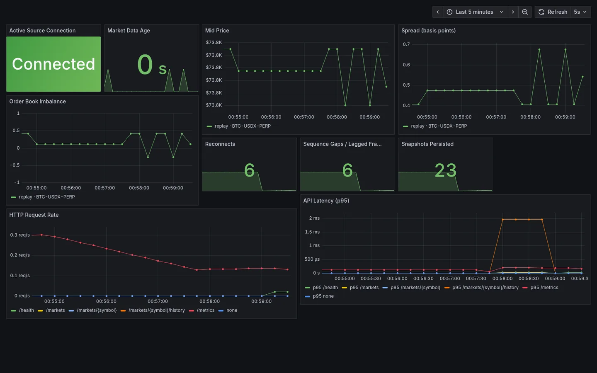
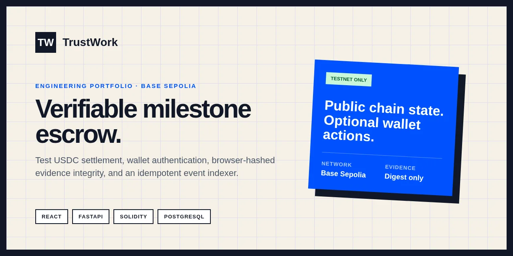
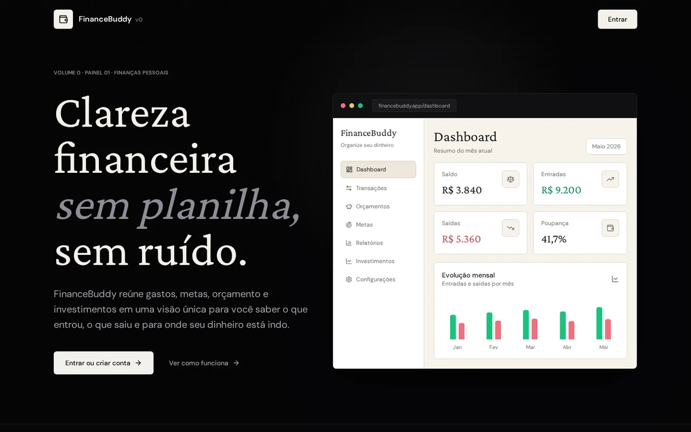

fewer eligible legacy private histories
Arthur Salmoria · Florianopolis, Brazil · LATAM
Backend & Blockchain Developer
I build reliable backend and blockchain infrastructure with Go, Rust, PostgreSQL, and security-first engineering practices.
Software Developer at LabSEC working on backend and Hyperledger Fabric infrastructure for Brazil's higher-education traceability network. I also build Rust, EVM, and Node.js systems focused on reliability, financial workflows, and verifiable execution.
salmoria.dev@gmail.com- Go
- Rust
- Node.js
- PostgreSQL
- Hyperledger Fabric
- Solidity
Measured outcomes
Proof in the implementation
lower observed pvtdataStore growth
automated tests in Nexus Market Observer
read-only REST endpoints
Storage results were measured in a controlled local Hyperledger Fabric benchmark.
Selected work
Systems built for evidence, recovery, and control
Systems built around reliability, financial workflows, blockchain infrastructure, and verifiable execution.

Featured · Rust backend · Unofficial Nexus project
Independent projectNexus Market Observer
An unofficial fault-tolerant Rust service built around the official Nexus Exchange SDK to ingest, validate, persist, and observe market data.
Problem
Market data is transient and failure-prone. A useful observer must preserve financial precision and expose gaps, staleness, disconnects, and dependency failures instead of masking them.
Engineering response
A bounded Tokio pipeline maintains a validated in-memory book, persists source-isolated history, resynchronizes after sequence gaps, and keeps API health explicit while Nexus or PostgreSQL recovers.
- 5 read-only REST endpoints
- Decimal-safe order-book analytics
- PostgreSQL source-isolated history
- Deterministic replay and public Testnet-live modes
- Stale, reconnecting, resyncing, and degraded states
- Sequence-gap detection and REST resynchronization
- Database outage recovery
- 41 automated tests and GitHub Actions CI
- Docker Compose and Prometheus
- 10-panel Grafana dashboard
- Rust
- Tokio
- Axum
- SQLx
- PostgreSQL
- Docker
- Prometheus
- Grafana
Independent portfolio project. Not affiliated with or endorsed by Nexus. It never executes trades or uses credentials. Replay data is always labeled; live mode uses public Testnet data only.

Smart contracts · Verifiable payments
Early accessTrustWork
A milestone-based USDC escrow that makes project funding, delivery evidence, disputes, and settlement explicit and verifiable.
The Solidity state machine defines funding, release, revisions, disputes, timeouts, cancellation, and pausing. A wallet-authenticated FastAPI indexer reconciles confirmed events into PostgreSQL while browser-side SHA-256 keeps original evidence files with the user.
- EIP-4361 wallet authentication and Base Sepolia enforcement
- EVM receipt and confirmation tracking
- Idempotent event indexing with confirmed-block reconciliation
- Foundry unit, fuzz, and invariant tests
- CodeQL, Slither, Trivy, dependency audits, and SBOM
- Solidity
- Foundry
- FastAPI
- PostgreSQL
- EVM
- Base Sepolia
Early access · Testnet only · Dedicated public deployment pending. No real money, private-file storage, external audit, or commercial availability.

Node.js backend · Financial workflows
Public appFinanceBuddy
A modular personal-finance platform that brings cash flow, budgets, goals, reports, and investments into one account.
A NestJS REST API separates five financial domains behind user-scoped PostgreSQL data and database-aggregated reports. Authentication uses short-lived access tokens, rotating HttpOnly refresh cookies, CSRF enforcement, and rate limiting.
- Prisma client and explicit data ownership
- Health endpoints, Jest, and Supertest
- Dependency audit, Gitleaks, Semgrep, and Trivy
- Node.js
- NestJS
- TypeScript
- PostgreSQL
- Prisma
- React
Manual financial records only. No bank or brokerage integration, trade execution, or financial advice.
Professional experience
Shipping privacy-aware blockchain infrastructure
Nov 2025 — Present
Software Developer
Computer Security Laboratory — UFSC
Building production-oriented backend and Hyperledger Fabric infrastructure for RRDES, Brazil's higher-education academic-record traceability network.
01
Private-data lifecycle
Designed deterministic key-level purge planning and operational tooling for Fabric Private Data Collections, reducing eligible private histories by 87.5%, observed pvtdataStore growth by 66.8%, and total peer-storage growth by 35.7% in a controlled local benchmark.
02
Revoked diplomas
Delivered an end-to-end revoked-diploma workflow across Go APIs, XML/XSD validation, web interfaces, formatters, and dedicated chaincode, blocking revoked diplomas at write time while preserving backward-compatible reads.
03
Consent and private-data sharing
Led the on-chain consent core and helped define a privacy-preserving data-sharing flow between institutions using authenticated context, Fabric events, mTLS, transient fields, destination PDCs, and revocation-driven purge.
Capabilities
A backend stack grounded in current work
Technologies used across professional systems and projects, grouped by the problems they help solve.
01 / Languages
- Go
- Rust
- TypeScript
- Python
- Solidity
- SQL
- Bash
02 / Backend & Data
- Node.js
- NestJS
- FastAPI
- Axum
- REST APIs
- PostgreSQL
- Prisma
- SQLx
03 / Blockchain & Infrastructure
- Hyperledger Fabric
- Fabric Gateway
- EVM
- JSON-RPC
- Foundry
- Docker
- Docker Compose
- Linux
- GitHub Actions
- GitLab CI/CD
- Prometheus
- Grafana
04 / Security & Cloud
- OAuth 2.0 / OIDC
- JWT
- RBAC
- TLS / mTLS
- X.509
- Keycloak
- AWS fundamentals
More work
Smaller systems, specific constraints
Go · PKI · X.509 · PostgreSQL · REST
IpeSign
Go-based document-signing core with ephemeral per-document certificates, a root/issuing CA chain, PDF hash signing, append-only ledger records, encrypted private-key persistence, and CLI and HTTP interfaces. No embedded PDF signature or PAdES yet.
RepositoryEducation product · Data workflows
Preparação DataDriven
A data-driven preparation platform for UFSC entrance-exam students, combining official score simulation, targets, reports, projections, and study-planning workflows.
Open productGo · Fyne · Academic modeling
IAA Calculator
A cross-platform Go desktop tool for calculating UFSC's Academic Performance Index, modeling target averages, and managing course data through a focused Fyne interface.
RepositoryEducation & credentials
Formal study, security foundations, clear communication
Education
B.S. in Information Systems
Universidade Federal de Santa Catarina
Mar 2025 — Expected Jul 2029
9.21 / 10.0
Academic Performance Index · 2025.2
View the UFSC program
Selected credentials
- AWS Knowledge: Security Champion AWS Skill Builder digital badge
- Google Cybersecurity Professional Certificate Google · Coursera
- IBM SOC in Practice IBM digital credential
Languages
- Portuguese
- Native
- English
- Fluent
- Spanish
- Intermediate
Contact
Let's build reliable systems.
I'm interested in backend, blockchain infrastructure, distributed systems, and financial-software opportunities.